Benutzer
Die Benutzerverwaltung im Administrationsbereich von xmera Omnia zeigt in der Standardübersicht eine Liste aller Benutzer der Instanz.
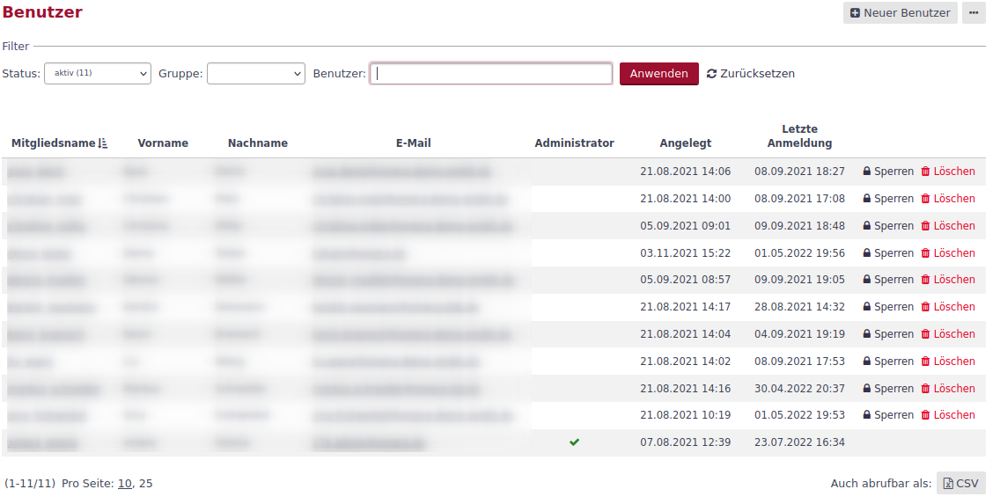
In dieser Liste werden alle aktiven Benutzer mit ihrem Mitgliedsnamen, dem Vor- und Nachnamen, der E-Mailadresse, der Kennung, dem Status als Administrator, wann das Konto angelegt wurde und wann die letzte Anmeldung durchgeführt wurde.
Aus dieser Liste können die einzelnen Benutzerkonten durch die Button in der entsprechenden Benutzerzeile aktiviert, gesperrt oder auch gelöscht werden.
| Das Löschen kann nicht rückgängig gemacht werden. Mit dem Löschen gehen alle Bezüge zu dem Benutzer verloren. Häufig ist es sinnvoller den Benutzer nur zu sperren. |
| Der Button Aktivierung steht zur Verfügung, wenn sich ein Benutzer registriert hat und die Registrierung noch nicht bestätigt wurde. |
Benutzer anlegen
Der Benutzer admin wird bei der Installation angelegt. Über den Administrator können die ersten Einstellungen erfolgen und weitere Benutzer angelegt werden.
Das Anlegen eines Benutzers kann auf verschieden Arten erfolgen:
-
durch eine manuelle Erfassung im Administrationsbereich,
-
durch einen CSV-Import im Administrationsbereich,
-
durch eine Selbstregistrierung des Nutzers,
-
durch eine LDAP-Kopplung.
Die verschiedenen Arten werden im Folgenden beschrieben.
Manuell
Ein neuer Benutzer kann über den Button  angelegt werden. Mit dem Klick wird folgendes Formular eingeblendet:
angelegt werden. Mit dem Klick wird folgendes Formular eingeblendet:
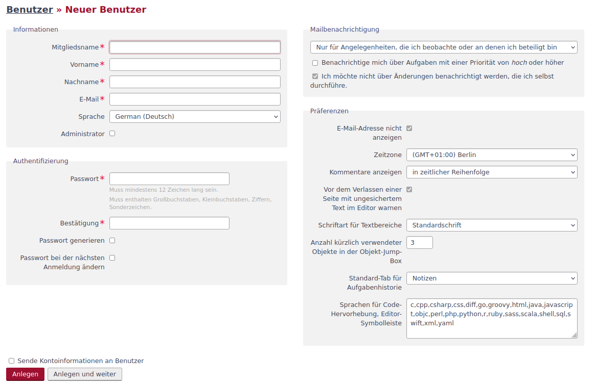
Das Formular ähnelt sehr dem des Benutzerkontos wie es im Anwenderhandbuch im Kapitel Mein Konto beschrieben ist.
Im Vergleich zur Bearbeitung des Benutzerkontos:
-
wird der Mitgliedsname (Benutzer-ID) gefordert,
-
besteht die Möglichkeit den Nutzer Administrationsrechte zu geben,
-
besteht im Bereich der Authentifizierung die Möglichkeit
-
automatisch ein Passwort zu generieren,
-
ein Ändern des Passworts bei der nächsten Benutzeranmeldung zu erzwingen
-
-
können dem Benutzer per E-Mail seine Kontodaten gesendet werden.
Die Parametrierung der 2-Faktor-Authentifizierung (2FA) steht in der Administratoransicht des Benutzerkontos nicht zur Verfügung. Im Konfigurationsbereich der Anwendung kann jedoch eine generelle Einstellung dazu vorgenommen werden, ob die 2FA verfplichtend oder optional sein soll.
Importieren
Über eine CSV-Schnittstelle können Benutzer in xmera Omnia importiert werden. Für den Import muss die Importdatei mindestens die Pflichtfelder enthalten.
Der Bemutzerimport erfolgt in 5 Schritten:
- Importdatei vorbereiten
-
Eine für den Import von Benutzern geeignete CSV-Datei muss folgende Daten beinhalten:
Spaltenbezeichnung Datentyp Beschreibung Beispiel Mitgliedsname
String
Anmeldename für den Benutzer. Nur Kleinbuchstaben, Ziffern und die Sonderzeichen _ - . ohne Leerzeichen erlaubt (Pflichtfeld)
max.mustermann
Vorname
String
Vorname des Benutzers. (Pflichtfeld)
Max
Nachname
String
Nachname des Benutzers. (Pflichtfeld)
Max
E-Mail
String
E-Mail Adresse des Benutzers. Muss eine gültige Form besitzen. (Pflichtfeld)
Sprache
String
Auswahl der Sprache in der Anwendung. Bei (auto) wird die Sprache des Rechners genutzt. Voll unterstützt wird aktuell nur German(Deutsch). Unseren Kunden stellen wir gerne weitere Sprachen bereit. (Standard: (auto))
false
Administrator
Boolean
Ist auf Ja zu setzen, wenn Benutzer Adminrechte haben soll. (Standard: Nein)
Nein
Authentifizierungs-Modus
Integer
ID des LDAP-Servers bei Benutzern mit LDAP-Authentifizierung. (Notwendig bei Benutzer mit LDAP-Authentifizierung)
1
Passwort
String
Muss mindestens 12 Zeichen lang sein. Muss enthalten Großbuchstaben, Kleinbuchstaben, Ziffern, Sonderzeichen (Pflichtfeld)
Ghx27!wsdX.dd
Passwort bei der nächsten Anmeldung ändern
Boolean
Wird Ja importiert, so muss der Anwender bei der ersten Anmeldung ein neues Passwort einstellen. (Standard: Nein)
Ja
Status
String
Mögliche Werte: aktiv; nicht aktivierte, gesperrt (Standard: aktiv)
aktiv
- Importdatei hochladen
-
Der Benutzerimport ist über das 3-Punkte-Menü oberhalb der Benutzerliste durch Klick auf den Menüpunkt Importieren erreichbar.
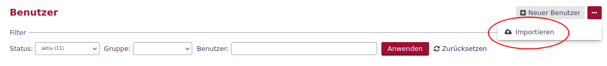
Das Hochladen kann per Auswahl über den Dateimanager oder per Drag & Drop erfolgen.
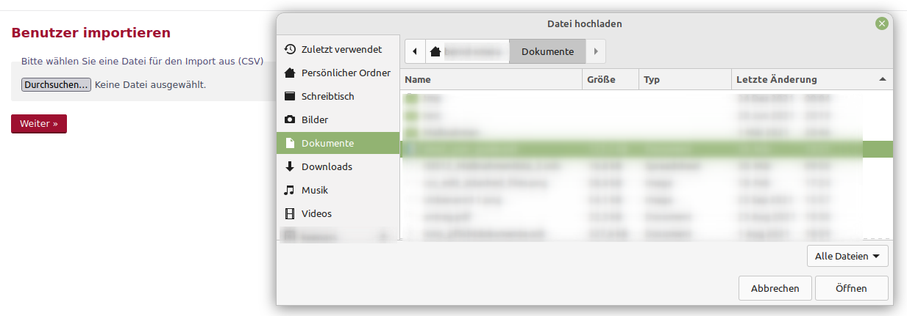
Dann auf Weiter klicken, um zu den CSV-Optionen zu kommen.
- CSV Optionen definieren
-
Die konkrete Wahl der CSV-Optionen hängt davon ab, wie die CSV-Datei erstellt wurde. Für die Kodierung ist im Normalfall UTF-8 die beste Wahl.
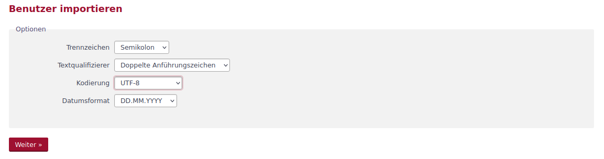
Dann auf Weiter klicken, um die Datenfelder zuordnen zu können.
- Datenfelder zuordnen
-
Wenn die Importdatei gut vorbereitet wurde, können alle Datenfelder automatisch zugeordnet werden. Andernfalls, muss eine manuelle Zuordnung durchgeführt werden.
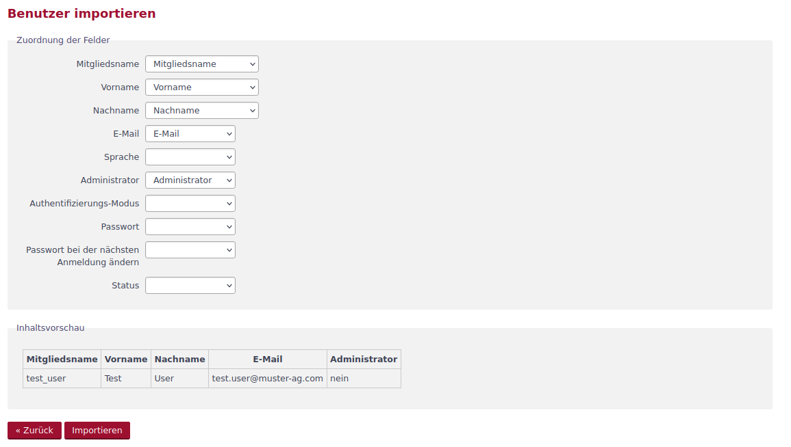
Dann auf Importieren klicken, um den Import zu starten
- Import durchführen
-
Während des Imports kann anhand des Zählers der Importfortschritt beobachtet werden. Wenn der Import erfolgreich verlief, wird eine Liste der neuen Objekte angezeigt.
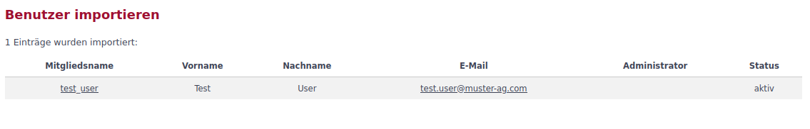
Andernfalls erhält der Benutzer entsprechende Fehlermeldungen wie beispielhaft unten im Bild zu sehen ist.
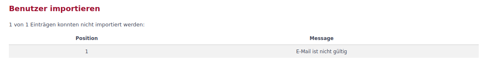
| Der Importprozess wird nicht abgebrochen, wenn eine oder mehrere Zeilen nicht verarbeitet werden können. Die nicht importierten Zeilen werden in Form ihrer Positionsnummer in der Fehlermeldung angezeigt und müssen separat in einem zweiten Versuch importiert werden. |
Selbstregistrierung
Über die Konfiguration kann bei der Authentifizierung die Selbstregistrierung gewählt werden. Bei dieser Art, kann sich ein neuer Benutzer mit seinen Daten (Mitgliedsnamen, Vor- und Nachnamen, E-Mailadresse und Passwort) registrieren. Je nach Anmeldeoption kann der registrierte Benutzer automatisch, nach einer E-Mailbestätigung oder durch einen Administrator aktiviert werden.
LDAP-Benutzer
Benutzer können über eine LDAP-Kopplung mit einem LDAP-Server verwaltet werden. Die Anbindung und die Funktionen werden im Kapitel LDAP-Authentifizierung beschrieben.
Benutzer bearbeiten
Durch Klick auf den Mitgliedsnamen in der Benutzerliste gelangt man in die Bearbeitungsmaske des Benutzers. Im oberen Bereich finden sich mehrere Taps und Funktionsbutton.
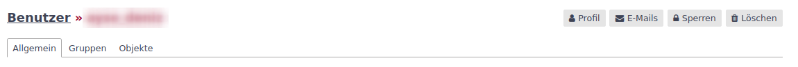
- Benutzerprofil
-
Ein Klick auf den Button 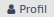 führt auf das Profil des Benutzers, in dem die zugewiesenen Aufgaben und sonstige Aktivitäten aufgezeigt werden.
- E-Mails
-
Durch Klick auf den Button 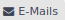 können dem Anwender weitere E-Mailadressen zugewiesen werden. Die Bedienung ist im Anwenderhandbuch im Kapitel Mein Konto beschrieben.
- Sperren / Entsperren
-
Weiter kann das Konto durch Klick auf den Button 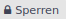 gesperrt bzw. 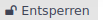 entsperrt werden.
- Löschen
-
Durch Klick auf den Button 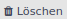 kann das Benutzerkonto gelöscht werden. Es muss dann nochmals bestätigt werden, dass der Benutzer gelöscht werden soll.
| Das Löschen kann nicht rückgängig gemacht werden. Mit dem Löschen gehen alle Referenzen zu dem Benutzer verloren. Häufig ist es sinnvoller den Benutzer nur zu sperren. |
- Bearbeitungsmasken
-
Über die drei Taps werden die Bearbeitungsmasken für die allgemeinen Daten, die Gruppenzuordnung und die Objektrollen dargestellt. Diese werden im Folgenden beschrieben.
Allgemein
Im Tap Allgemein können die Kontodaten des Benutzers angepasst werden. Das Formular entspricht dem beim manuellen Anlegen eines Benutzers.
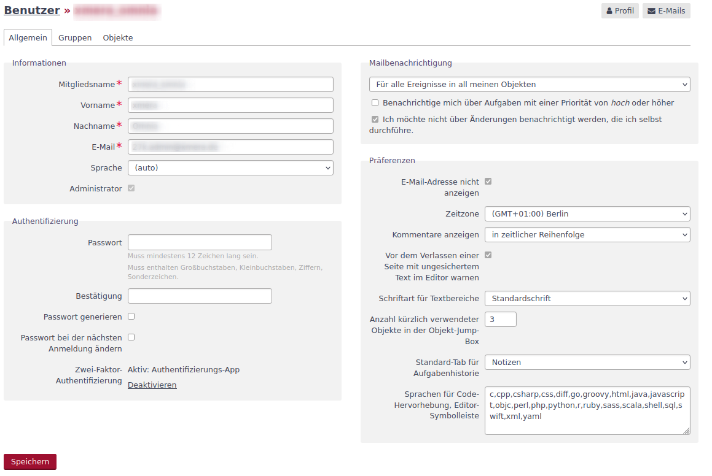
Die Beschreibungen zu den einzelen Feldern / Attributen finden sich im Adminhandbuch im Kapitel manuell Anlegen und im Anwenderhandbuch im Kapitel Mein Konto.
Gruppen
Im Tap Gruppen sind die Gruppen aktiviert, denen der Benutzer zugeordnet ist.
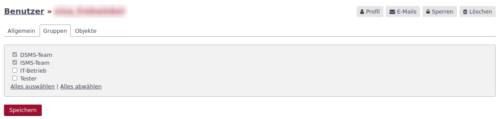
In dem Beispiel oben sind es das DSMS-Team und das ISMS-Team. Durch Setzen oder Entfernen der Haken vor den Gruppen und dem anschließenden Speichern kann die Gruppenzuordnung geändert werden.
Objekte
Der Tap Objekte zeigt die Objekte an, in denen der Benutzer Rechte mittels einer oder mehrerer Rollen besitzt.
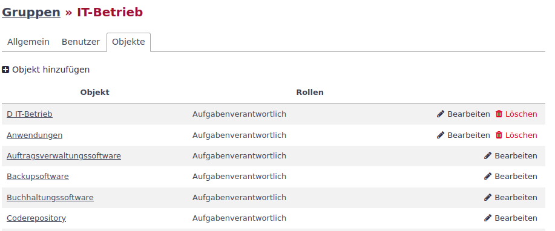
Im Beispiel unten hat der Benutzer in einem der gelisteten Objekte gleich zwei Rollen. In diesem Fall kummulieren sich die Rechte.
- Objektzuordnung ändern
-
Die Rollenzuordnung zu jedem einzelnen Objekt kann in der Objektkonfiguration im Tab Mitglieder festgelegt werden.
Der Administrator hat aber auch hier die Möglichkeit die Zuordnung zu bearbeiten. Die Rollen, die ein Benutzer in einem der aufgeführten Objekte hat, kann über den Button
 erfolgen. Es werden verfügbare Rollen gelistet und durch Setzen oder Entfernen der Häkchen werden die Rollen aktiviert oder deaktiviert.
erfolgen. Es werden verfügbare Rollen gelistet und durch Setzen oder Entfernen der Häkchen werden die Rollen aktiviert oder deaktiviert.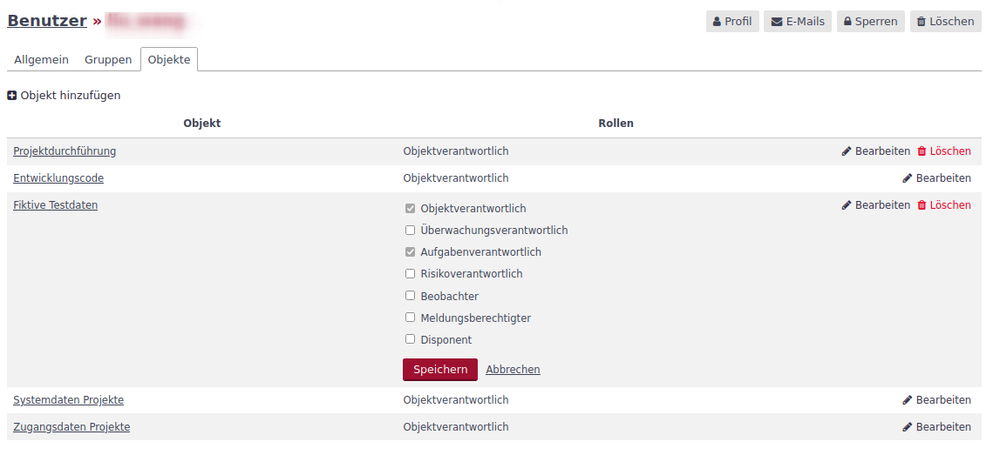
Durch Speichern werden die Änderungen übernommen.
Rechte, die der Benutzer durch die Gruppenzugehörigkeit erhalten hat, können an dieser Stelle nicht verändert werden. Ebenso lassen sich diese Objektzuordnungen nicht löschen. - Objektzuordnung löschen
-
Durch den Button
 kann die Rolle in einem Objekt komplett gelöscht werden.
kann die Rolle in einem Objekt komplett gelöscht werden. - Objektzuordnung hinzufügen
-
Soll ein Benutzer Rollen in Objekten erhalten, die noch nicht in der Liste enthalten sind, so erfolgt dieses über den Button
 . Es wird eine Maske mit der Objektstruktur und den Rollen angezeigt.
. Es wird eine Maske mit der Objektstruktur und den Rollen angezeigt.

In dieser Maske ist die Kombination aus Objekt(en) und Rolle(n) auszuwählen, die dem Benutzer zugeordnet werden sollen. Mit Klick auf den Button  werden die Anpassungen übernommen.
werden die Anpassungen übernommen.